Live screens
Real views of the running demo, not mock-ups.
A script opens each view in a browser and takes the picture. When the
product changes, one command takes the pictures again.
Captured on 2026-11-18 with
Playwright. Nothing on this page is a mock-up.
The S.R.C. dashboard
Six views of the dashboard that the control plane serves, as an approver sees them.
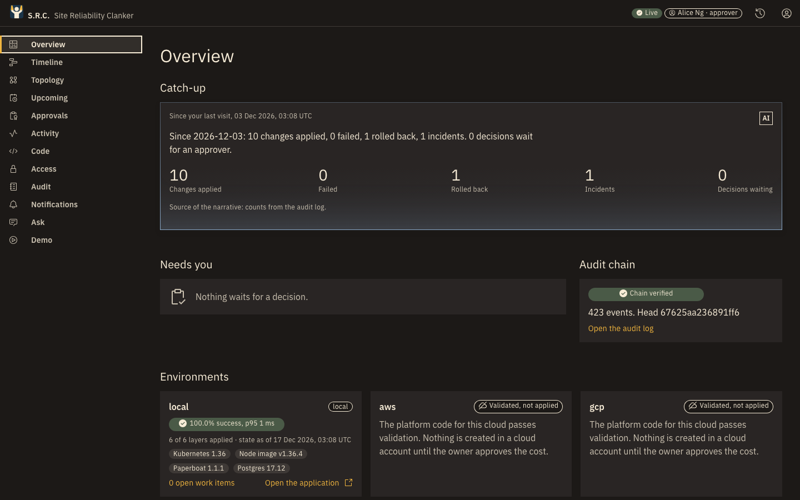
Overview
The health of each environment, and the changes that wait for a decision.
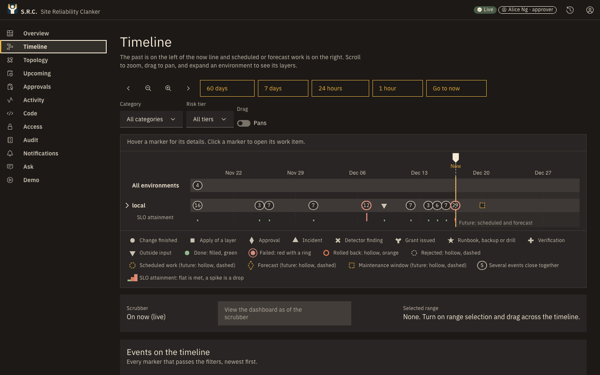
Timeline
The work of the past weeks by layer, and the maintenance that is coming.
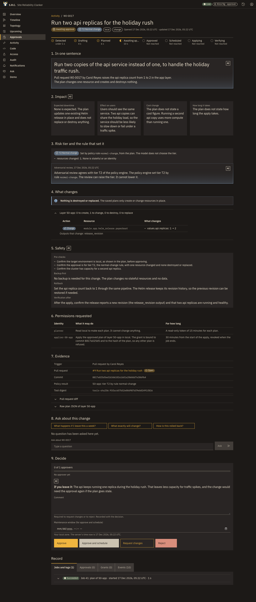
Approval page
A change that waits for a decision: the summary, the impact, the tier, the plan, and the buttons to decide.
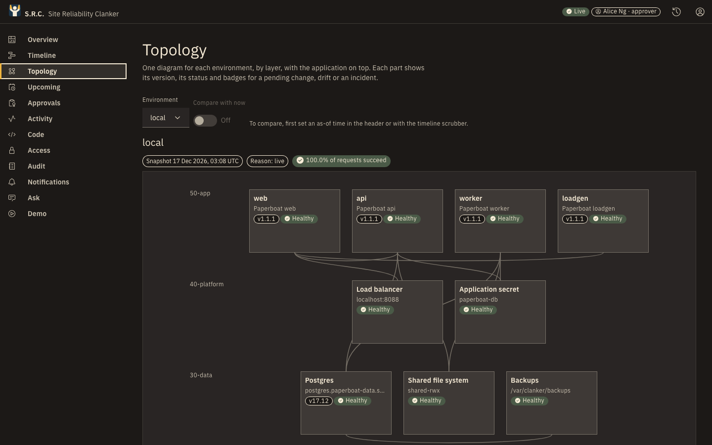
Topology
The parts of the environment and the connections between them.
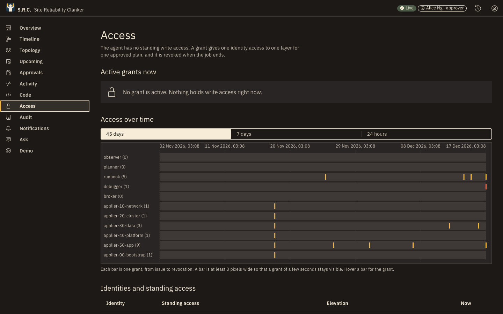
Access
The grants that are open now, and every grant that ended.
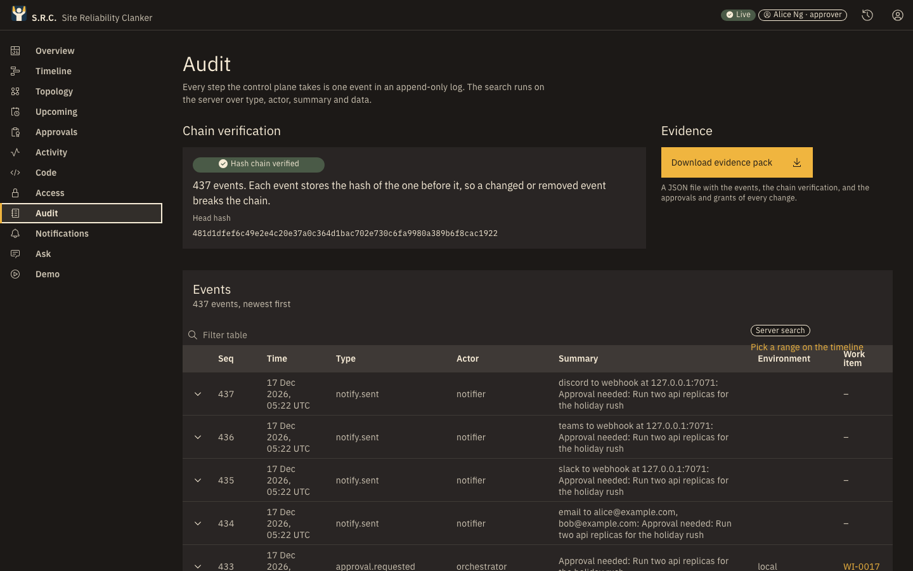
Audit
The event log, with a search and the check of its hash chain.
Paperboat, the managed application
The fish rental business that S.R.C. deploys and looks after.
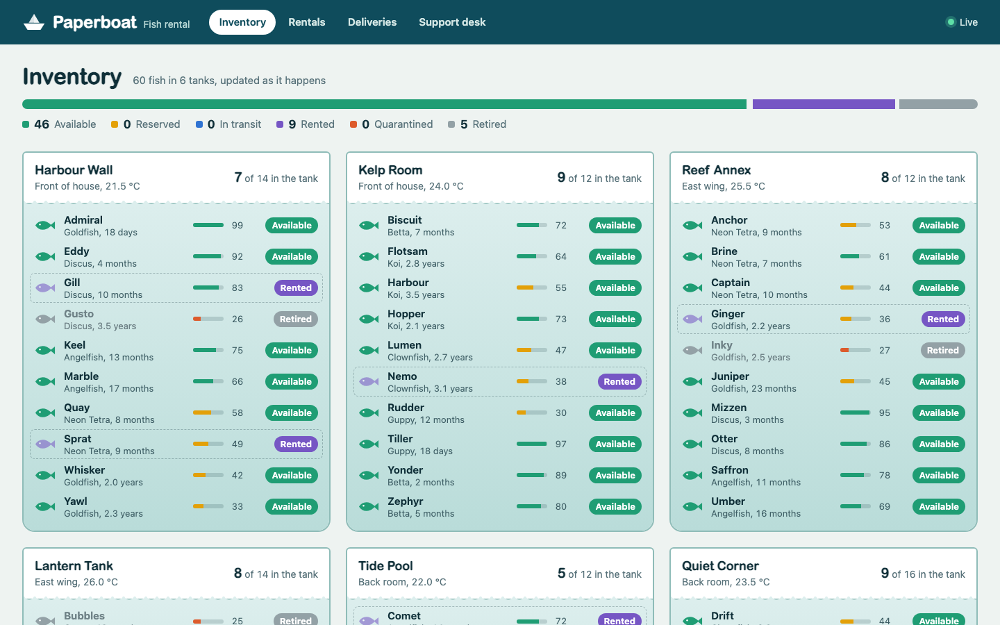
Live inventory board
Fish by tank, with status, age and condition. It updates from a live stream.
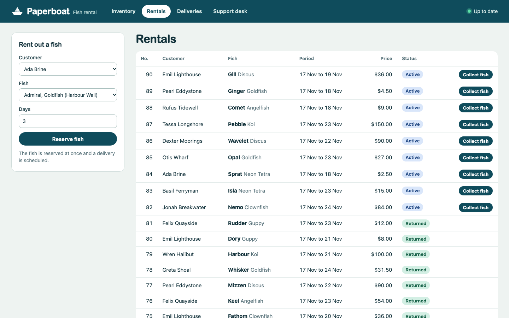
Rentals
Who has which fish, and until when.
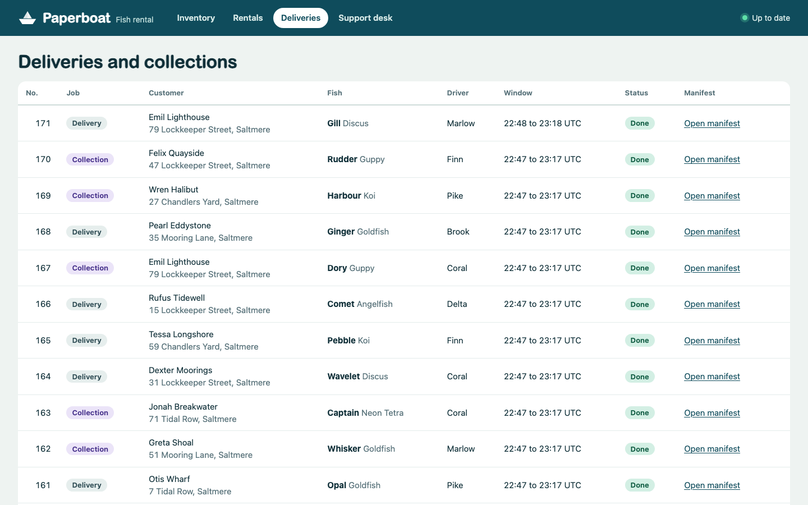
Deliveries
Deliveries and collections, each with a manifest on the shared file system.
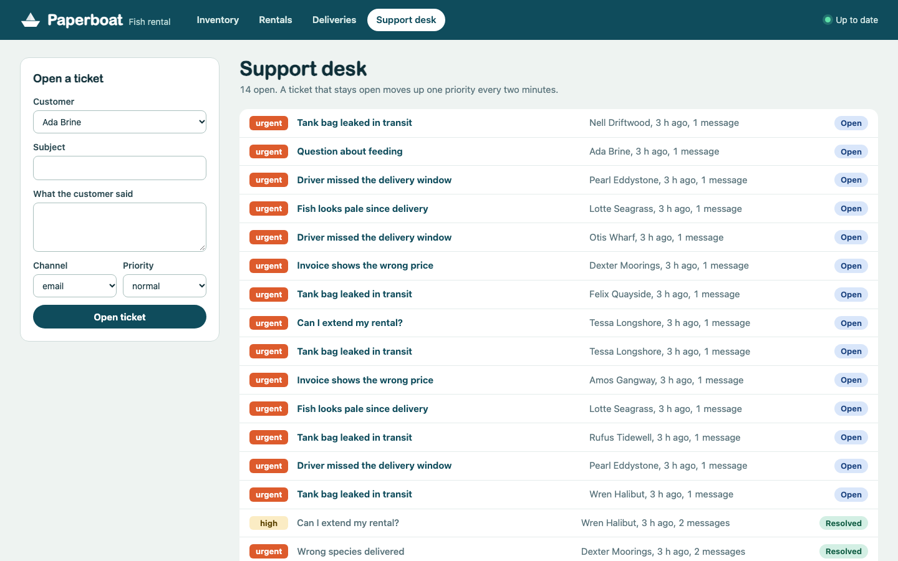
Support desk
Tickets from customers, with each interaction.
Where the notifications arrive
The mail inbox and the webhook sink of the demo, with the messages that the control plane sent.
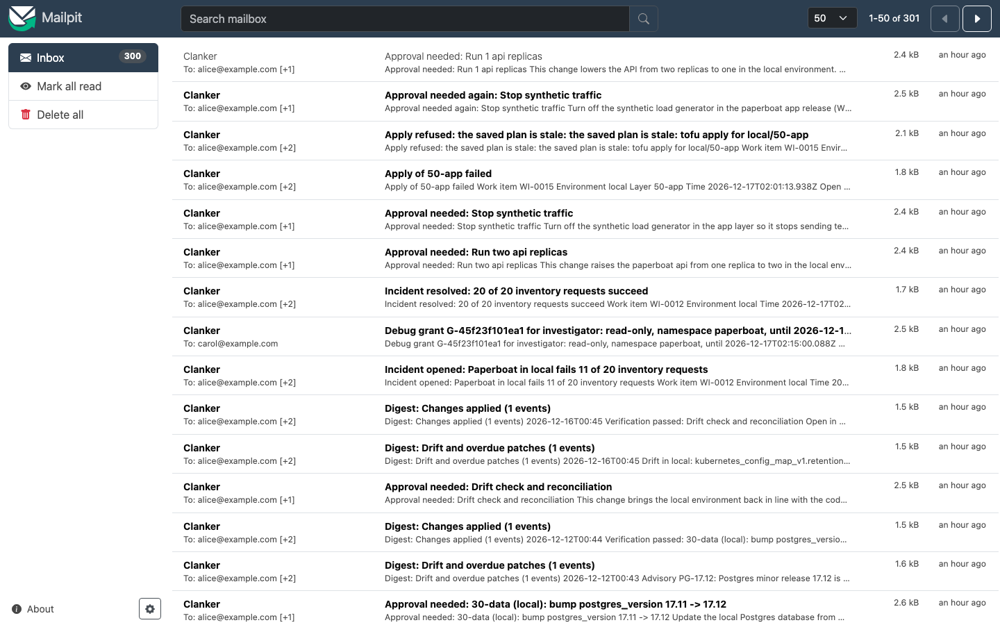
Mail inbox
The emails that S.R.C. sent to the approvers during the month.
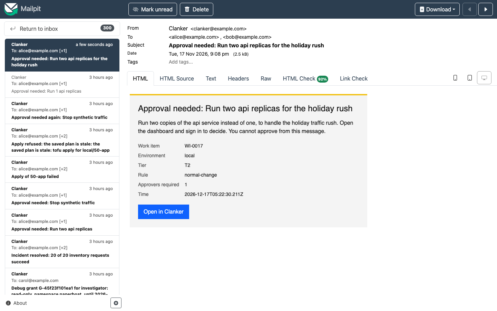
An approval email
What an approver receives: the change in one sentence, and a link to decide.
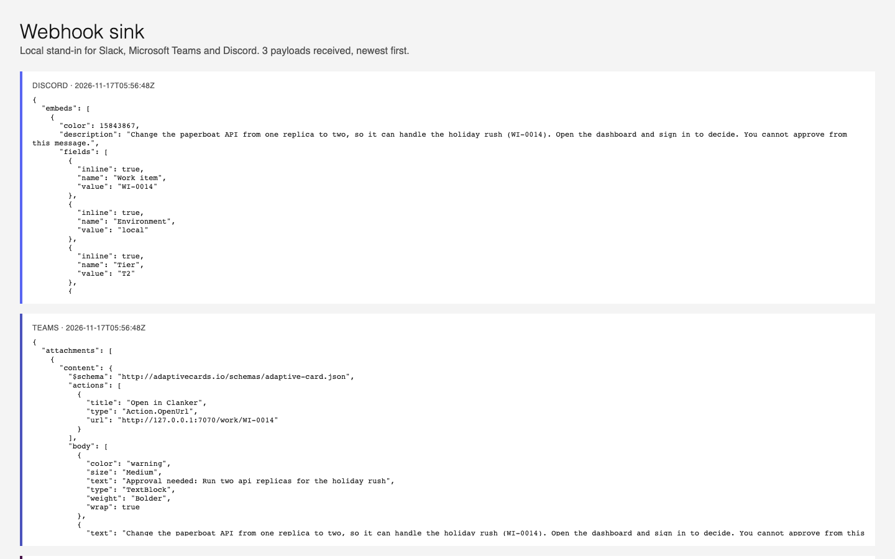
Webhook sink
A local stand-in for Slack, Microsoft Teams and Discord, with the real payloads.